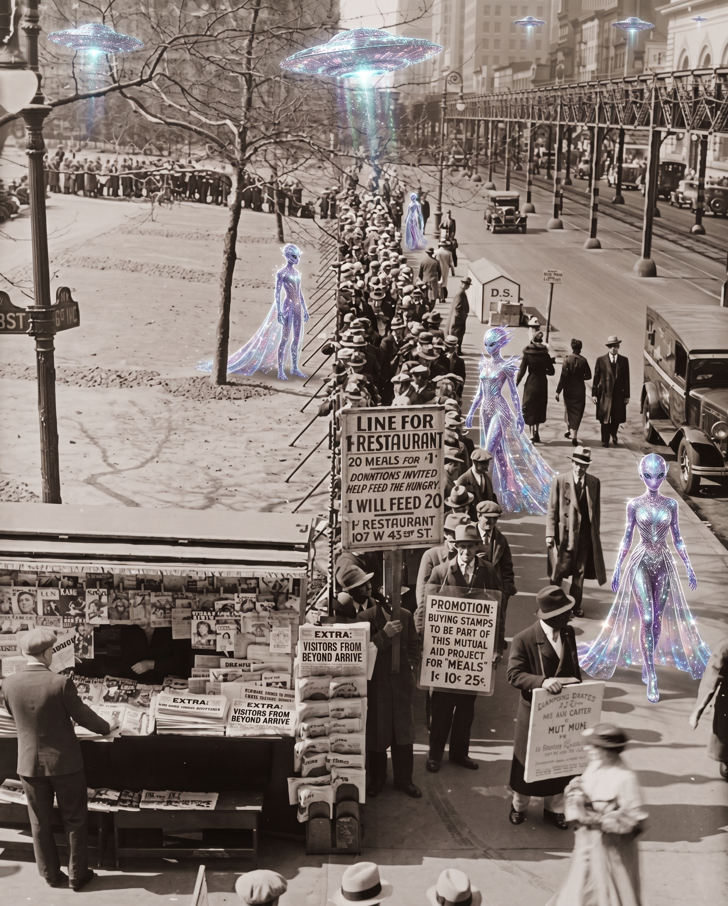

Over America

Dispatches from the eastern seaboard confirm the arrival of unidentified craft above the rooftops last evening, whereupon the visitors, having surveyed our breadlines and our dance halls in equal measure, are reported to have taken a particular interest in one forthcoming holiday festivity — and saved the date, enthusiastically.
Witnesses describe the vessels as "polished as a new dime," their occupants "green, sexy, and unfailingly polite." Local authorities urge the citizenry to keep calm, dress warmly, and, above all, to keep the fifth of December held open. Provisions will be plentiful. Cocktails, abundant. Grievances will not be entertained.
A word to parents: the visitors have declared this gathering strictly for grown persons. Kindly arrange a sitter, a bunker, or a well-appointed decoy for your children before the invasion commences. This is no place for minors — extraterrestrial or otherwise.
Full coordinates and further instruction to arrive by secured channel in the coming weeks. Until then: press your finest wool, polish your tap shoes, and — should a saucer land in your yard — offer the pilot a cup of coffee. Manners are the last defense of these United States.